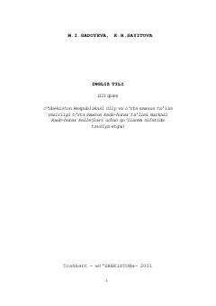

ITKasb-hunar kollejlari uchun mo'ljallangan ingliz tili o'quv qo'llanmasi.
Ushbu o'quv qo'llanma kasb-hunar kollejlari o'quvchilari uchun mo'ljallangan bo'lib, ingliz tili grammatikasi, kundalik mavzular va iqtisodiy-siyosiy matnlarni o'z ichiga oladi. Kitob o'quvchilarning og'zaki nutq ko'nikmalarini rivojlantirish va mutaxassislikka oid matnlarni tushunish malakasini oshirishga qaratilgan.